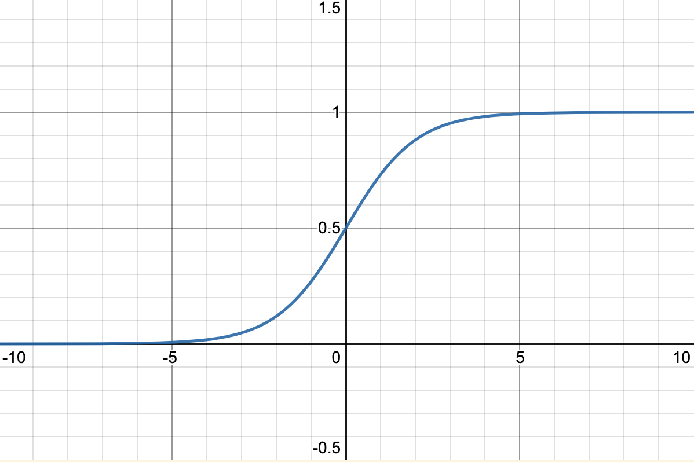
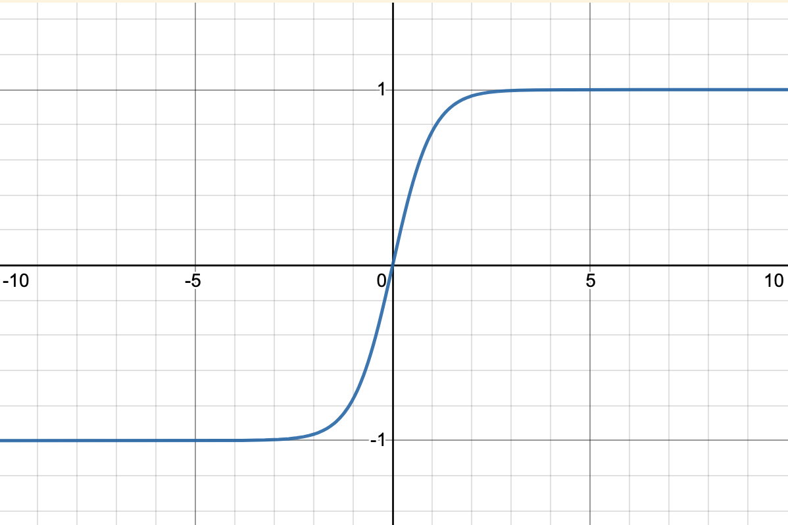
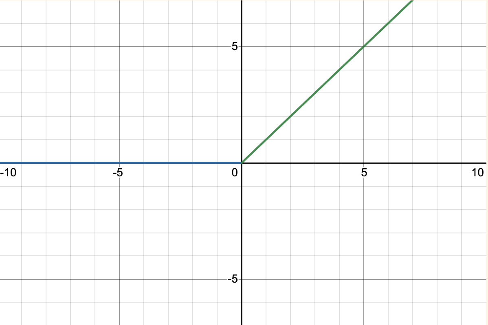
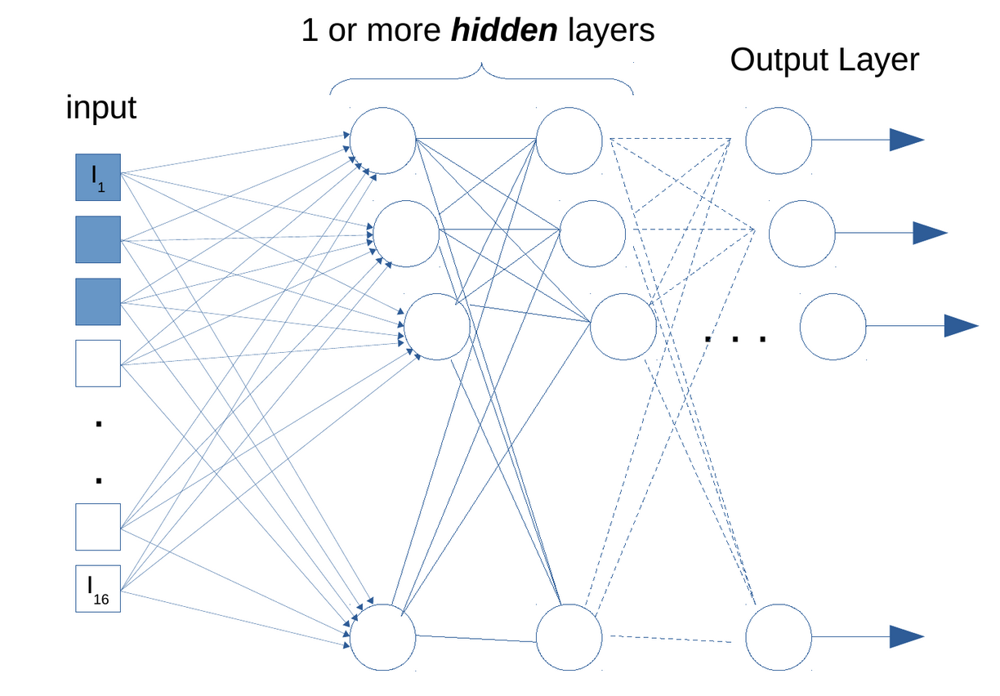

5 Neural Nets
Fairly straightforward; we'll learn how to train a basic neural net from scratch and such.
McCulloch-Pitts model¶
You have a set of inputs \(I_{1}, I_{2}, \dots I_{k}\) which are then each multiplied by respective scalars \(w_{1},w_{2},\dots w_{k}\) and they are summed up. If that sum is greater than some threshold value, then a 1 is outputted.
Perceptron¶
This takes a McCulloch-Pitts model as a single perceptron, that preforms the sum and threshold of inputs and returns some output. It is a single unit of processing in a traditional neural net.
Outputting some value given some threshold is called the activation function. This is the difference between a McCulloch-Pitts model, as it can be more complicated than simply being greater than some threshold.
Example¶
Suppose we want to detect a pattern in an image. The image is 4x4.
| Col 1 | Col 2 | Col 3 | Col 4 |
|---|---|---|---|
| X | |||
| X | X | ||
| X | |||
| X |
How should we set the weights and thresholds properly?
Threshold: 5 Weights:
- 1 if X
- -1 for all other cells (so if they are activated/have X, then the sum would subtract 1)
This is so we can exactly identify the specific pattern, and it will only activate when the correct pixels are X.
But this is still too strict, to make it more accepting of general answers, we need to change the activation function to return smoother values than just 0 or 1.
Activation functions¶
The logistic function¶
top=1.5;bottom = -0.5;
---
y=1/(1+e^{-x})

Hyperbolic Tangent¶
Useful for linear regression as it outputs negative values
top=1.5;bottom = -1.5;
---
y=(e^{x}-e^{-x})/(e^{x}+e^{-x})

Rectified Linear Unit (ReLU)¶
Linear after some threshold
y=0| x<0
y=x| x>0

Addressing thresholds¶
We can add a bias input that can shift the function without actually having to change the activation function.
Training¶
The process is a form of reinforcement learning!
- We show the input to the network
- Compute the output which would give us some error (compared to the true result).
- We then iterate
- Correct and modify the weights to continuously reduced the error (could be squared error)
How to adjust weights?¶
Need to find $$ \frac{ \partial err }{ \partial w_{ab} } $$
Where \(a\) is the index of an input, \(b\) is an index of a neuron connected to the input.
We can therefore decompose it to: $$ \frac{ \partial A(I) }{ \underbrace{ \partial w_{ab} }{ I{a} } } \underbrace{ \frac{ \partial Output_{A} }{ \partial A(I) } }{ \text{activation fnc deriv} } \frac{ \partial Err{A} }{ \partial Output_{A} } $$
where $$ A(I) = \sum_{i}w_{i}I_{i} $$
The third term may give problems if its squared error, so often a different type of error metric is used.
Error backpropogation¶
Which we can use to create a gradient descent function, where \(\alpha\) is some small learning rate.
Stochastic Gradient Descent (SGD)¶
To make weight updates more efficient, you can take a batch of inputs of size \(k\), accumulate the squared error, and then does one big weight update for the \(k\) weights.
Issues with the activation function¶
- Saturation: For example, with the logistic function, beyond 5 and -5 (or whatever limits) will simply give 0 gradient.
- Causes the learning to halt
- Dealt with by resetting the weights and trying again and working between the two limits
- Reset when the weights of the last few iterations show no changes
Multi-layer networks¶
Fully connected multi-layer networks are only good for small problems, for larger problems it quickly becomes unwieldy and too complicated to learn.

The inner layers of the network are meant to learn "features" of the data.
The learning/updating of the weights are now also more complicated.
If we find any weights that grow too fast, or don't change much at all, we can cut those weights out (exploding gradient problem).